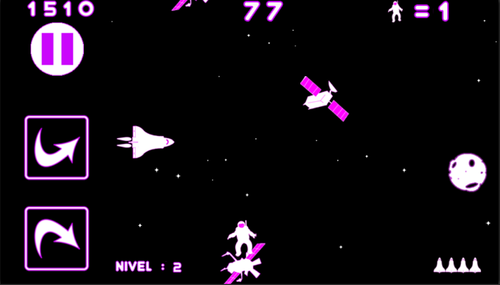
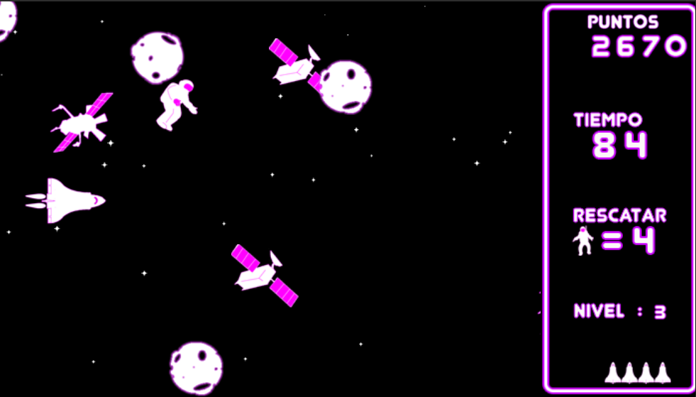

Facil de hacer un juego de aviones en construct 2
por kiko vidal
El juego de la avioneta o avión como lo he llamado yo. Es un juego hecho en construct 2, con la edición gratuita.
Ya que, a usar pocos recursos, tanto layouts y layers. También son pocos los eventos y Sprite que vamos a usar con la edición gratuita es suficiente para hacer un juego bastante curioso tanto si lo queremos para el escritorio o para el móvil.
Para el móvil yo he puesto dos botones, uno de dirección arriba y el otro para la dirección de abajo. Lo bueno que puedes usar cualquier tema sobre él y usar los personajes que quieras. También el uso del paralax para animar el efecto de las nubes y un Sprite de vida que va apareciendo aleatoriamente. Como la barra de la vida que a chocarse con las minas, misiles y el Sprite de la vida, la barra crece o baja. Según va bajando la barra de la vida, del avión aparecerá una cortina de humo que según sea el nivel de vida así será su espesor.
El juego trata de un avión que a saber por qué, se ve rodeado de minas y misiles. Tratando de esquivarlos y que su impacto provoca daños y hace descender la barra de la vida. Es un juego sin fin, ya que no tiene ninguna meta y que cuanto más tiempo jugando, más se acelera la velocidad del juego, complicando así el esquive de los enemigos.
Otra variante
Como he dicho antes, cualquier tema es bueno. Esta es una variante del mismo juego, pero en el espacio.
El juego es similar con la diferencia que, en este, la dificultad es de tratar el rescate de unos astronautas despistados. Donde el tiempo y que en cada nivel sube el número de astronautas que rescatar.
.


Tiene dos opciones para móvil y escritorio, un menú de opciones compuesto por: opciones de teclado y móvil como también el lenguaje(idioma), que en este caso lo tengo en español y ingles.
Si queréis jugar aqui lo teneis: